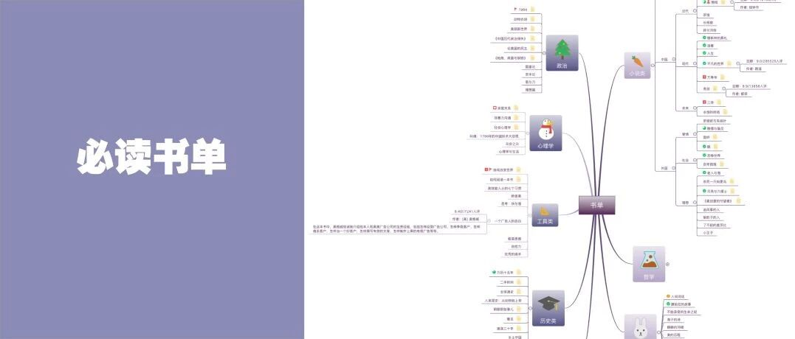

书单 | 提升自我，25岁前我想读完的50本书（一份很系统的书单）

关注 秋秋很开心 🎵
努力做一个“治愈+宝藏”女孩

又是新的一天呀
我一直认为，人生在世许多事情无力改变，但是「阅读」，是改变的最佳途径。
这次准备了超级超级详细的书单🔍，很多书读过有些书想读，记得看到最后，这次有福利～
内容索引：
1.小说类图书推荐
2.文学类图书推荐📖
3.工具类图书推荐
4.历史类图书推荐
4.心理类图书推荐🔧
5.成长类图书推荐
25岁之前，不想恋爱、轻装前行，踏踏实实的，把想读的书读完～
小 说 类
我们不能经历所有的人生，但是通过别人的故事，总能体会出什么。小说对于我最大的意义，就是了解更多人生。
NO.1
[日] 村上春树 / 挪威的森林

故事讲啥：
这是一部爱情小说，高中时候看过一次感触很深。主要讲主人公渡边与两个女孩间的爱情纠葛，整个书弥漫着一种忧郁，但还是日本小说那种，单纯又热烈的感觉......
经典摘抄：
我因为爱你，所以常常想跟你道歉。
有多喜欢？——喜欢你到全世界的老虎都化成黄油。
同类书籍📖
1 | 《雪国》| 川端康城 🙋 |
2 | 《人间失格》| 太宰治 |
3 | 《情书》| 岩井俊二 （电影） |
NO.2
[日] 黑彻柳子/ 窗边的小豆豆

故事讲啥：
这是一本非常温暖的小说。对我来说，日本小说，或者纯情忧伤、或者简单温暖。这本作者讲了小豆豆在幼儿园在小林校长的爱护和引导下，从一个“怪”小孩逐渐变成更好小孩的故事。
经典摘抄：
小豆豆感到，生平第一次遇到了真正喜欢自己的人！因为，从小豆豆出生后直到现在，还从来没有一个人这么长时间地听她说话呢！
如果自己向后退缩，就会被人推着向前，自己必须采取积极主动的态度才行。
同类书籍📖
1 | 《解忧杂货店》| 东野圭吾 🙆 |
2 | 《人间便利店》| 村田沙耶香 |
3 | 《如父如子》| 是枝裕和 |
NO.3
路遥 /平凡的世界

故事讲啥：
选第三本小说的时候，很纠结。《茶馆》《活着》《穆斯林的葬礼》《长恨歌》......因为第三本书想选中国近现代“苦难”小说。这本主人公孙少平从故事的开始是一个农民，到故事最后是煤炭工人，相比于逆天改命，这种真实有时给我更多力量。
经典摘抄：
命运总是不如愿。但往往是在无数的痛苦中，才使人坚强起来;虽然这些东西在实际感受中给人带来的并不都是欢乐。
她不怕这个家穷，她从小就穷惯了。不管别人对她的丈夫怎么看，这个忠厚善良的农家姑娘，始终在心里面热爱着这个被世人嫌弃的人----因为在这个世界上，只有这个男人，曾在她哪没有什么光彩的青春年岁里，第一次给过他爱情的欢乐啊！
同类书籍📖
1 | 《活着》| 余华 |
2 | 《青春之歌》| 杨沫 🙋 |
3 | 《半生缘》| 张爱玲 |
NO.4
[英] 毛姆 / 月亮与六便士

故事讲啥：
这一本想选理想主义小说，没有斗志当时候可以看一看这几本～故事讲诉一个原本平凡的证券经纪人，突然着了艺术的魔，抛妻弃子，用画笔谱写出自己光辉灿烂并死亡的故事。
经典摘抄：
满地都是六便士，他却抬头看见了月亮。
做自己最想做的事，生活在自己喜爱的环境里，淡薄宁静、与世无争，这难道是糟蹋自己吗？
同类书籍📖
1 | 《老人与海》| 海明威 🙋 |
2 | 《麦田里的守望者》| J. D. 塞林格 |
3 | 《偷影子的人》| 马克·李维 |
文 学 类
文学不是柴米油盐酱醋茶，但是是平淡生活里面的英雄梦想。我喜欢淡淡生活的文学作品～
NO.5
[清] 沈复 / 浮生六记

内容讲啥：
这是一部自传体文学的作品，书中记叙了作者夫妇间有趣的生活，及之后坎坷际遇，和各地浪游闻见。文辞朴素，但情感真挚......
经典摘抄：
“布衣菜饭，可乐终身，不必作远游计也。”
“人生碌碌，竞短论长，却不道荣枯有数，得失难量。”
同类书籍📖
1 | 《撒哈拉的故事》| 三毛 🙋 |
2 | 《我们仨》| 杨绛 |
3 | 《爱你就像爱生命》| 王小波 |
NO.6
王国维/ 人间词话

内容讲啥：
这是一套写给年轻人的国学读本。严肃一点的文学，我很少看，但现在更觉得是发现美的历程。
经典摘抄：
古今之成大事业、大学问者，必经过三种之境界。"昨夜西风凋碧树，独上高楼，望尽天涯路"，此第一境也；"衣带渐宽终不悔，为伊消得人憔悴"，此第二境也；"众里寻他千百度，蓦然回首，那人正在灯火阑珊处"，此第三境也。
“有有我之境，有无我之境。”
同类书籍📖
1 | 《美的历程》| 李泽厚 🙋 |
2 | 《云雀叫了一整天》| 木心 |
3 | 《海子的诗》| 海子 |
工 具 类
小时候最不爱读这类书，对方法论嗤之以鼻。长大后最爱这类书，因为最短的时间，可以学到作者一生的东西。
NO.7
[美] 迈克尔•布劳斯 / 四型生理时钟

能得到啥：
曾经我也执着过早起，无奈做不到。看了这本书才知道人分为四类：海豚型、狮子型、熊型，狼型......每一类都有适合自己的生物钟。书中给出了每个类型最高效的一天，非常有用。
经典摘抄：
海豚型：失眠症患者，
狮子型：早起的人
熊型：多数人，不早不晚
狼型：晚睡的人，夜里活动
狮子型，位于食物链顶端，喜欢在早上捕猎。这种类型适合习惯早起的人，他们一般比较乐观，睡眠冲动中等。
同类书籍📖
1 | 《你充满电了吗》| 拉思 🙋 |
2 | 《30岁前的每一天》| 水湄物语 |
3 | 《100个基本》| 松浦弥太郎 |
NO.8
[日] 山下英子/ 断舍离

能得到啥：
学会物品整理，并且通过整理物品了解自己，整理心中的混沌。断=断绝不需要的东西 ，舍=舍弃多余的废物 ，离=脱离对物品的执着。
经典摘抄：
要是自己能随便凑合着用一个东西，那别人也会用随便的态度来对待你。
不管东西有多贵，有多稀有，能够按照自己是否需要来判断的人才够强大。
同类书籍📖
1 | 《思维导图—大脑使用说明》| 东尼•博赞 |
2 | 《写给大家看的设计书》| Robin Williams |
3 | 《化妆品：原理•配方•生产》| 王培义 |
心 理 类
大学四年就学的这个专业，虽然毕业之后没有从事相关工作，但是依旧认为很有帮助。
NO.9
[美] 罗兰•米勒 / 亲密关系

内容讲啥：
深刻揭露亲密关系中的各种现象，比如吸引力、沟通、依赖，注意，亲密关系不只只讲爱情。
经典摘抄：
"亲密关系能满足人的归属需要，所以人们才非常看重，表现为排他和吃醋，会尽力维护。"
"人格特质对人际关系的影响更重大、稳定、长久。外向、随和与尽责的人更容易有好的人际关系。"
同类书籍📖
1 | 《心理学与生活》| 菲利普·津巴多 🙋 |
2 | 《非暴力沟通》| 马歇尔·卢森堡 |
3 | 《社会心理学》| 戴维·迈尔斯 |
NO.10
「法」勒庞 / 乌合之众

内容讲啥：
书中主要描述了集体心态，比如：群体冲动多变、易受暗示和轻信、情绪的夸张与单纯......现在看键盘侠、吃瓜群众不也是这种，所以看一点心理学人真的会宽容一点。
经典摘抄：
构成这个群体的人，不管他是谁，不管他的生活方式有多大区别，不管他的职业是什么，不管他是男是女，也不管他的智商是高还是低，只要它是一个群体，那么他们就拥有一个共同的心理，集体心理。
群体的叠加只是愚蠢的叠加，而真正的智慧却被愚蠢的洪流淹没了。
同类书籍📖
1 | 《叫魂：1786年的中国妖术大恐慌》| 孔飞力 |
2 | 《梦的解析》| 弗洛伊德 |
3 | 《自卑与超越》| 阿弗雷德·阿德勒 |
历 史 类
读史使人明智，最重要的是你能感受到中国上下5000年的文化，进而觉得今天的事非常渺小。
NO.11
[美] 黄仁宇 / 万历十五年

能体会啥：
明朝万历十五年，在中国，是平平淡淡的一年。但是表面发生的看似末端小节的事，实质上都是以后发生大事的症结所在。从这部书，开始感受到一个皇帝治理国家的不容易和重要性......
经典摘抄：
1587年，是为万历十五年，岁次丁亥，表面上似乎是四海升平，无事可记，实际上我们的大明帝国却已经走到了它发展的尽头。
在王朝制度下，很难把个人玩忽职守和制度的失败分开。
同类书籍📖
1 | 《明朝那些事》| 当年明月 🙋 |
2 | 《激动三十年》| 吴晓波 |
3 | 《看见》| 柴静 |
NO.12
[白俄] S.A.阿列克谢耶维奇 / 二手时间

能体会啥：
这本书讲的俄罗斯历史。主要是苏联解体后，二十年间的痛苦的社会转型中。这本书能让你看到普通人，为梦想破碎付出的代价。每个人都在重新寻找生活的意义。
经典摘抄：
我希望做一个冷静的历史学家，而不是点燃火炬的历史学家。让时间做法官吧。时间是公正的，但那是说遥远的时间，而不是最近的时间。
有人已经在出售我们的眼泪，还有我们的恐惧，就像出售石油一样。
同类书籍📖
1 | 《全球通史》| 斯塔夫里阿诺斯 🙋 |
2 | 《人类简史：从动物到上帝》| 尤瓦尔·赫拉利 |
3 | 《乡土中国》| 费孝通 |
成 长 类
对我影响最大的书，就是《红楼梦》
NO.13
[清] 曹雪芹 / 红楼梦

能影响你啥：
对我来说，不仅仅是贾宝玉与林黛玉的爱情悲剧，更是一个大家族一个国家命运的凝缩。每次看我都会对命运产生终极思考，是否一切只是一场梦？或者我们活着也不过就是来经历一场。
经典摘抄：
那红尘中有却有些乐事，但不能永远依恃，况又有“美中不足，好事多磨”八个字紧相连属，瞬息间则又乐极悲生，人非物换，究竟是到头一梦，万境归空.
假作真时真亦假，无为有处有还无。
更多感悟
命运：《红楼梦》所有女孩子，都没有善终。
能力：我最喜欢探春管家，但是最有能力的探春，却只能在战败的时候去和亲。
信任：吴氏红楼梦的结局，黛玉没有信任小红，最后贾家败落自缢而死。
坏人：王熙凤设相思局、设高利贷、逼死尤二姐....但是罪行最多的她死后是最挂念贾家的。
纯洁：妙玉一生纯洁，最后是被强盗掳去玷污。
人生：所有的姑娘都在薄命司里有职位，人间也不过是一场遭遇。
NO.14
「英] 乔治·奥威尔 /1984

能影响你啥：
和红楼梦一样，这也是一篇小说，但是豆瓣评分9.3分。关于政治，关于人性。这本书会带给你和教会你太多太多，并且将终生受用.....
经典摘抄：
"谁控制过去就控制未来，谁控制现在就控制过去。"
"他们就像蚂蚁一样，可以看到小东西，却看不到大的。在记忆不到而书面记录又经篡改伪造的情况下，党声称它已经改善了人民的生活，你就得相信。"
关于成长
最后这两本，之所以放在成长里，因为《红楼梦》和《1984》是很难去开启的书，或许长、读起来也许不顺畅。但是把这两本书看完，真的会对你的观念影响最大。
读书是一个缓慢改变的过程，读完一本长篇故事，不亚于你身边家人、朋友对你的影响。
啦啦啦🎉🎉🎉～
终于写完了这篇「书单」了，一共整理了14+36，共计50本。
而我知道，仅仅推荐了书单，并不能实际解决什么，所以我整理了这50本书的电子版本。没错，就是50本！！！
别错过了，今天就读起来吧......

获取方式：
1.免费
分享本文到朋友圈，集齐25个赞，截图后台即可～
（50本书只要25个赞，朋友帮忙就搞定👬！！！）
秋秋
求赞25个！这50本书，真的值得好好读完～
书单|提升自我，25岁前一定读完的50本书（一份很系统的书单）
26分钟前


曹雪芹，乔治·奥威尔，弗洛伊德，沈复，王国维，黄仁宇，村上春树，川端康成，海明威，太宰治，费孝通，张爱玲，三毛，余华，路遥，杨绛，木心，海子，戴维·迈尔斯，菲利普·津巴多 ，东尼•博赞
2.购买：
点击「阅读原文」，进入我的资料小店，随时可购买，价格1.99/本～
（我看的书会一直同步，格式较全.....）

☕️

Q＆A
问/答/时/间
你最喜欢哪本书？
快在留言区留下你的想法吧
点 “阅读原文 ” 购买